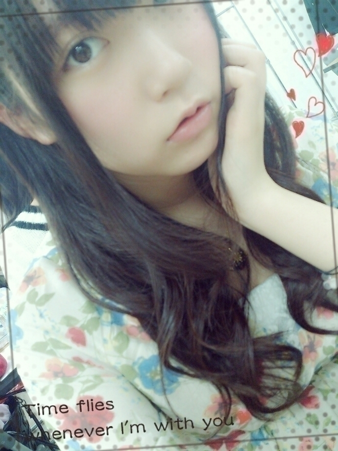
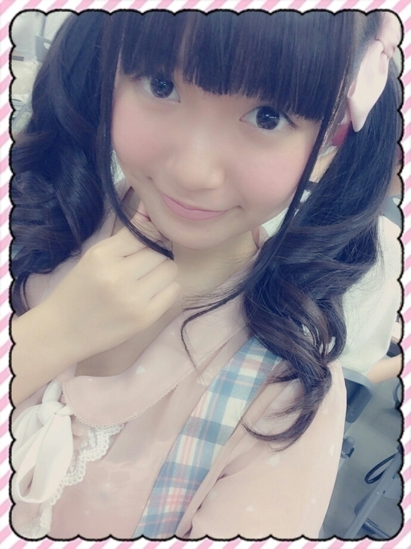

| 2014/09 29 Mon | ひめたん-OoO-その483 |
この土日は
幕張で握手会でした(っ´ω`c)
遊びに来てくれたみなさん
ありがとうございました♪
お留守番ちーむのみなさんレポだよー
□全国握手会
16レーンで
さゆ・あすかりんと一緒でした！

さゆあすひめ～
ツインテールおそろっちに
したんだよ\( ˆoˆ )/
この日は本当に
たくさんのひとが会いに来てくれて
嬉しかったな\❁/
「待ち時間長かったよ(>_<)」って
みんな言ってたのごめんね！
でもそれだけたくさんのひとが
16レーン行きたいって
思ってくれたのかなーって
3人はとってもびっくりしたの♡♡
飛鳥軍団(仮)のみなさんも
サユリストのみなさんも
きゅんきゅん王国のみなさんも
それから、あの、なんてゆーの、
いろいろ兼ねてらっしゃるひとも(笑)
仲良くしてくれてありがとう( ˇωˇ )
そういえば今になってみると
このペア好き～っていってくれるひとも
多かった気がする！
ひめにゃん～格差社会～
ふたりの単推しってひとは
ひめたんにもやさしくしてくれて
なんてすてきな人たち(；ω；)ってなった
コメントや個握で
人多かったから諦めちゃった～
なんてひともいらっしゃったな
今度は会いに来てね♡
□個別握手会
1部＊おろし巻き
2部＊サイドおろし巻き

3部＊サイド三つ編み的なやーつ
4部＊安定のついんてーるくるくる

おねーさんみたいなお洋服と
メルヘンなお洋服。
あなたはどっちのひめがお好み？♡
ということで
来てくれたみなさんありがとう！
乃木ののMCお疲れ様～てお話が多くて
みんなラジオ聴いてくれてるんだなって
嬉しくなりました♪
新MCがはビジネス仲良しの
あすかりんなので
近いうちにゲストとして参加したいな～
みなさんこれからも乃木のの聴いてね
ひめたんもリスナーとして聴く！
あとアニメの話☆
夏アニメ終わっちゃったねーとか
秋アニメ始まるねーとか
ラブライブが相変わらず好きだとか。
野崎くんとかアオハライドとか
ほかにも夏は楽しかったな～
ほんとにみんな秋アニメ何観るの？
ひめは次回までに調べておきます
弱虫ペダル！TERRA FORMARS！
それにアンダーライブ。
行くよーって教えてくれて
よし頑張ろうって思った(゜ω゜)にゃん
外れちゃったひとも多くて
もしかして今回倍率高いのかな？
ほんとはみんなに観に来てほしいくらい。
日記でちゃんとレポするから
楽しみに待っててね♪
ほかにも楽しいお話たくさん
ありがとうございました！
りぼんや、ぴんくや
きゅんきゅん王国民さんなんだなって
すーぐわかる格好ってすてき♡
はじめましてさんもたくさんで
嬉しかったです(＊´ω`＊)
この2日間握手会
とってもとっても楽しかったよ！
みんな本当にありがとう♡
そうそう、ハンドクリーム教えてって
たくさんのおにゃのこに聞かれたり
実は前々から質問もきてたから
写メ載せます∩(・ω・)∩

左❁リップクリーム(URIAGE)
中❁香水(JILL STUART)
右❁ハンドクリーム(LALINE)
全部バニラの香りなんだ～＊
個人PV予告編 アップされました！
「わたしがわたしであることの証明」大山徹 監督
乃木坂46 youtube公式チャンネルで
公開されています
感想待ってるよー♪
30日発売の月刊エンタメ
まあやとふたりでペアグラビア
撮っていただきました！
いろんな衣装着たり
まあやとふたりでわっきゃわっきゃしたり
楽しい撮影だったなあ～
チェックしてみてね(＊>ω<＊)

 逆にプライベート小百合さんは
逆にプライベート小百合さんは
どんな人ですか？
のほほんとしてて、女の子らしくて
気さくで話しやすいおねーさん＊＊
でも、アニメの話になると
うきゃうきゃきゃーって元気になります
今朝も いこたん・さゆ・私で
まあ派手に盛り上がったよね
万理華に軽く引かれた......( ºωº )
2つ前くらいのブログの写メで着てた
ピンクのカーディガンが
可愛くて気になってます！
よかったらお店教えて下さい♡
京都個握のかな？
LODISPOTTOだよ♪
ひめたんがクリスマスプレゼントで、
これは是が非でも
サンタさんからもらいたい、
またはもらって嬉しかったのって何ー？
かわいいワンピースかな♡
小さい頃にもらった
カエル柄の傘が当時は嬉しかった......
今思うとナンセンスね( ´_ゝ`)
 王国民が守らなければならない
王国民が守らなければならない
"きゅんきゅん憲法"的なものって
今あったりするんですか？
「素直な心を持つべし」
素直な人にしかびーむは効かないからね
他にもいいのあれば募集中。
ひめたんの日記の
コメント欄下２ケタに46を踏んだ方へ
手書きでコメ返するコーナー
＼ ひめたん46 ／

いつもたくさんのコメント
ありがとうございます
全部読んでるよ～♪
記事が充実したから
のぎ天のことは次回お話するね
ボローン＼(^o^)／
おねーさんの制服は
ループタイっていうんだね！
(＊´・ω・＊)
コメント(778)
2014/09/29 23:48